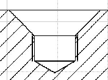
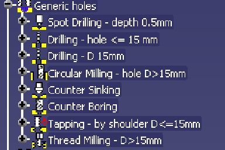
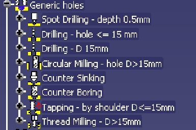
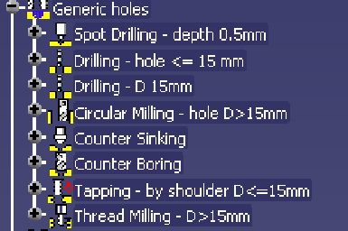

Generic
drilling process Parameters
Available for V5 Holes :
Simple drill,
Counterbored, Countersink


 


Spot drilling
(no condition)
-depth
0.5 mm
-Tool
query : Centerdrill with Nominal Diameter < 5mm
• Drilling
(condition Hole with D>15mm)
-by shoulder
-Depth
= hole depth (automatic)
-Tool
query : Drill with
-Nominal
Diameter = 15 mm
-Edit
check : Hole Diameter > 15 mm
•
Drilling (condition hole with D<=15mm)
-by shoulder
-Depth
= hole depth (automatic)
-Tool
query : Drill with
-Nominal
Diameter = Hole Diameter
-Edit
check : Hole Diameter <= 15 mm
•Circular
milling (condition hole with D>15 mm)
•Helical
-Edit
check : Hole Diameter > 15 mm
• Counterbored
(condition hole type is counterbored)
-by
diameter
-Diameter
= counterbored Hole diameter
-Tool
query : End Mill with
-diam
= counterbore diam
- corner radius = 0 mm
Edit check : hole type
= counterbored
•Countersink
(condition hole type is countersink)
-by
diameter
-Diameter
= countersink Hole diameter
-Tool
query : countersink with :
-Diam
min < Hole diam
-Diam
max > Countersink diam
-Cutting
angle = Countersink angle
-Edit
check : Hole Type = Countersink
•Tapping
(condition Hole with D<=15mm)
-By shoulder
-Depth
= design hole thread depth (automatic)
-Tool
query : Tap with Nominal Diameter = design Thread hole diameter
-Edit
check : Insert the operation only if the hole is Threaded
(Hole.Threaded)
-Edit
check : Hole Diameter <=15 mm
-Circular
theading (condition Hole with D>15mm)
-Helical
-Edit
check : Hole Diameter > 15 mm
•Approach
and retract macro up to safety plane (the one defined in
the PO by default)